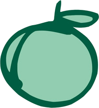
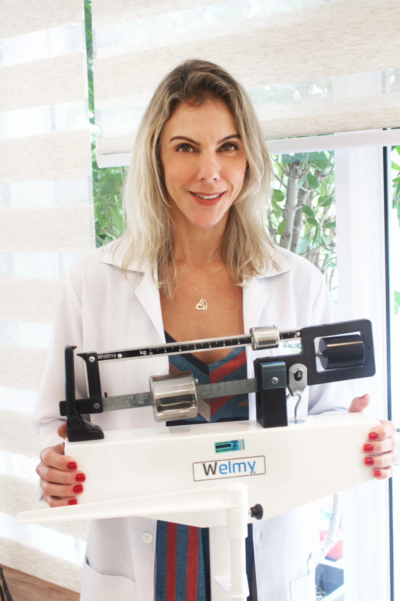

Mariana Veiga Nutrição clínica e esportiva
Sou Mariana Veiga, formada em Nutrição Clínica em 2004 pelas Faculdades Integradas Bennett, no Rio de Janeiro.
Acredito na alimentação como base da saúde: uma dieta nutritiva, prazerosa e feita de comida de verdade, com ingredientes naturais e sem industrializados. Cada paciente recebe atenção personalizada.
Minhas orientações vão além do consultório. Compartilho receitas, dicas e conteúdos educativos nas redes sociais, para tornar a nutrição aplicável no dia a dia.
“Primeiro a gente muda a alimentação, depois a alimentação muda a gente.”
O excesso de industrializados, cheios de conservantes, corantes, açúcar, gordura e sódio, intoxica o corpo e abre caminho para doenças. A nutrição faz o contrário: previne, trata e recupera. Com escolhas certas e consistentes, é possível transformar o corpo e a vida.
Durante a faculdade passei por várias áreas como estagiária, e foi ali que montei minha base: na clínica, no ambulatório da Santa Casa de Misericórdia, no centro do Rio, e no esporte, na Federação de Atletismo do Rio de Janeiro (FARJ).
Logo que me formei, atendi em academias da zona sul, trabalhei como personal diet em domicílio e pouco depois montei meu consultório particular, onde atendo até hoje, no Jardim Botânico.
Depois de 21 anos de atuação, hoje minhas áreas incluem:
Me conte seu objetivo pelo WhatsApp e eu retorno com os horários disponíveis.